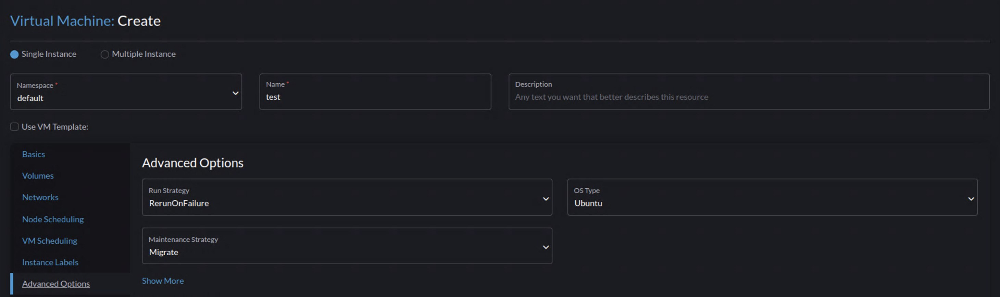

|
Ce document a été traduit à l'aide d'une technologie de traduction automatique. Bien que nous nous efforcions de fournir des traductions exactes, nous ne fournissons aucune garantie quant à l'exhaustivité, l'exactitude ou la fiabilité du contenu traduit. En cas de divergence, la version originale anglaise prévaut et fait foi. |
Verrouillage d’UC
SUSE Virtualization prend en charge le verrouillage d’UC pour les machines virtuelles. Pour utiliser cette fonctionnalité, vous devez d’abord activer le Gestionnaire d’UC sur les nœuds, puis activer le verrouillage d’UC lors de la création de la machine virtuelle.
Gestionnaire d’UC Kubernetes
La fonctionnalité Gestionnaire d’UC améliore l’allocation des ressources UC dans les clusters Kubernetes, garantissant que les charges de travail avec des besoins de performance stricts reçoivent des ressources UC stables et prévisibles. Ceci est particulièrement important pour les applications à haute performance et sensibles à la latence.
SUSE Virtualization utilise la stratégie static du Gestionnaire d’UC lorsque le Gestionnaire d’UC est activé. Cette stratégie gère un pool partagé d’UC qui inclut initialement toutes les UC sur les nœuds avec la configuration suivante :
-
Les pods dans la classe de qualité de service (QoS)
Guaranteedqui demandent des cœurs d’UC entiers (par exemple, UC : « 2 ») se voient attribuer des UC dédiées. Ces UC sont « verrouillées » au pod et sont retirées du pool partagé d’UC. -
Les pods dans les classes QoS
BurstableetBestEffortpartagent les UC restantes dans le pool partagé.
Calcul du pool partagé d’UC
SUSE Virtualization réserve des ressources UC pour les opérations au niveau système en fonction de la formule GKE, avec les valeurs systemReserved et kubeReserved allouées dans un ratio de 2:3.
Exemple (nœud avec 16 cœurs d’UC) :
systemReserved: 408 millicores kubeReserved: 612 millicores
Dans cet exemple, environ 15 cœurs d’UC (14980 millicœurs) sont disponibles pour les charges de travail.
Lorsqu’une machine virtuelle (pod) dans la classe QoS Garantie demande 4 UC, 4 cœurs sont dédiés à cette machine virtuelle. Les pods dans les autres classes QoS partagent les 11 cœurs d’UC restants dans le pool partagé.
Activer et désactiver le Gestionnaire d’UC
Lorsque vous activez le Gestionnaire d’UC, SUSE Virtualization définit la stratégie du Gestionnaire d’UC sur static. Lorsque vous désactivez la fonctionnalité, SUSE Virtualization rétablit la stratégie du Gestionnaire d’UC sur none.
Vous devez activer ou désactiver le Gestionnaire d’UC sur chaque nœud séparément.
-
Dans l’Interface utilisateur SUSE Virtualization, allez à Hôtes.
-
Localisez le nœud dans la liste, puis sélectionnez ⋮ → Activer le Gestionnaire d’UC ou Désactiver le Gestionnaire d’UC.
Laissez un certain temps à SUSE Virtualization pour appliquer la stratégie correspondante du Gestionnaire d’UC.


limites
-
Le Gestionnaire d’UC ne peut pas être activé sur le nœud témoin.
-
Le Gestionnaire d’UC doit être activé ou désactivé sur chaque nœud de gestion séparément. Vous devez attendre que l’opération soit terminée avant de commencer une autre.
-
Les machines virtuelles avec le verrouillage d’UC activé doivent être arrêtées avant que le Gestionnaire d’UC ne soit désactivé sur le nœud correspondant.
Activer le verrouillage d’UC sur une nouvelle machine virtuelle
-
Vérifiez que le gestionnaire d’UC est activé sur un ou plusieurs nœuds.
Si le gestionnaire d’UC n’est pas activé sur au moins un nœud, la machine virtuelle reste bloquée dans l’état
Unschedulableaprès le démarrage. Pour plus d’informations, voir Concepts liés au verrouillage d’UC. -
Allez à Machines virtuelles.
-
Cliquez sur Create.

-
Dans l’onglet Options avancées, sélectionnez Activer le verrouillage d’UC.

-
Cliquez sur Enregistrer.
L’activation du verrouillage d’UC ajoute dedicatedCpuPlacement: true à .spec.template.spec.domain.cpu dans la configuration de la machine virtuelle (YAML). Lorsque dedicatedCpuPlacement est défini sur true, les demandes de ressources UC et mémoire sont automatiquement réglées pour correspondre aux limites afin de garantir que les critères de QoS garantie sont respectés.
Comme les demandes et les limites sont identiques, les paramètres de Surallocation des ressources UC et mémoire ne s’appliquent pas aux machines virtuelles avec le verrouillage d’UC activé.
|
Pour utiliser le verrouillage d’UC sur une machine virtuelle existante, vous devez redémarrer la machine virtuelle après avoir activé la fonctionnalité et enregistré le changement. |
Migration en direct de la machine virtuelle
Les machines virtuelles avec le verrouillage d’UC activé ne peuvent être migrées que si le Gestionnaire d’UC est activé sur le nœud cible.
Mises à niveau
Lors de la mise à niveau d’un nœud, SUSE Virtualization vide tous les pods et migre en direct les machines virtuelles vers un autre nœud. Pour éviter les interruptions du processus de mise à niveau, assurez-vous que le Gestionnaire d’UC est activé sur d’autres nœuds et que des ressources suffisantes sont disponibles chaque fois que vous utilisez des machines virtuelles avec le verrouillage d’UC activé.